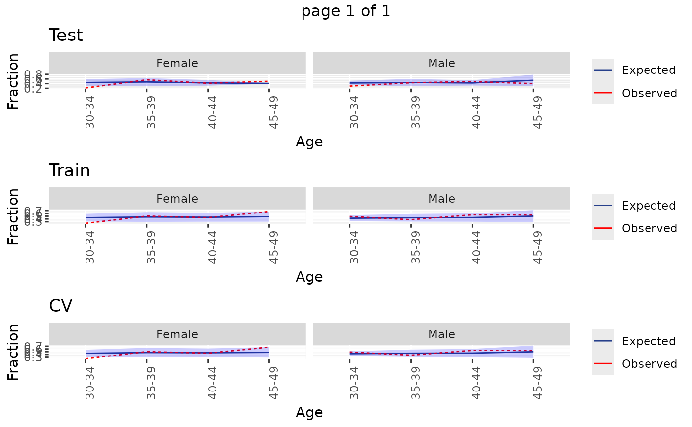

Plot the Observed vs. expected incidence, by age and gender
Source:R/Plotting.R
plotDemographicSummary.RdPlot the Observed vs. expected incidence, by age and gender
Usage
plotDemographicSummary(
plpResult,
typeColumn = "evaluation",
saveLocation = NULL,
fileName = "roc.png"
)Arguments
- plpResult
A plp result object as generated using the
runPlpfunction.- typeColumn
The name of the column specifying the evaluation type
- saveLocation
Directory to save plot (if NULL plot is not saved)
- fileName
Name of the file to save to plot, for example 'plot.png'. See the function
ggsavein the ggplot2 package for supported file formats.
Value
A ggplot object. Use the ggsave function to save to file in a different
format.
Examples
# \donttest{
data("simulationProfile")
plpData <- simulatePlpData(simulationProfile, n=1000)
#> Generating covariates
#> Generating cohorts
#> Generating outcomes
saveLoc <- file.path(tempdir(), "plotDemographicSummary")
plpResult <- runPlp(plpData, outcomeId = 3, saveDirectory = saveLoc)
#> Use timeStamp: TRUE
#> Creating save directory at: /tmp/RtmpiJFC0z/plotDemographicSummary/2025-03-31-3
#> Currently in a tryCatch or withCallingHandlers block, so unable to add global calling handlers. ParallelLogger will not capture R messages, errors, and warnings, only explicit calls to ParallelLogger. (This message will not be shown again this R session)
#> Patient-Level Prediction Package version 6.4.0
#> Study started at: 2025-03-31 17:04:20.864307
#> AnalysisID: 2025-03-31-3
#> AnalysisName: Study details
#> TargetID: 1
#> OutcomeID: 3
#> Cohort size: 1000
#> Covariates: 98
#> Creating population
#> Outcome is 0 or 1
#> Population created with: 970 observations, 970 unique subjects and 452 outcomes
#> Population created in 0.0463 secs
#> seed: 123
#> Creating a 25% test and 75% train (into 3 folds) random stratified split by class
#> Data split into 242 test cases and 728 train cases (243, 243, 242)
#> Data split in 0.24 secs
#> Train Set:
#> Fold 1 243 patients with 113 outcomes - Fold 2 243 patients with 113 outcomes - Fold 3 242 patients with 113 outcomes
#> 63 covariates in train data
#> Test Set:
#> 242 patients with 113 outcomes
#> Removing 0 redundant covariates
#> Removing 0 infrequent covariates
#> Normalizing covariates
#> Tidying covariates took 0.645 secs
#> Train Set:
#> Fold 1 243 patients with 113 outcomes - Fold 2 243 patients with 113 outcomes - Fold 3 242 patients with 113 outcomes
#> 63 covariates in train data
#> Test Set:
#> 242 patients with 113 outcomes
#>
#> Running Cyclops
#> Done.
#> GLM fit status: OK
#> Creating variable importance data frame
#> Prediction took 0.101 secs
#> Time to fit model: 0.213 secs
#> Removing infrequent and redundant covariates and normalizing
#> Removing infrequent and redundant covariates covariates and normalizing took 0.152 secs
#> Prediction took 0.0915 secs
#> Prediction done in: 0.324 secs
#> Calculating Performance for Test
#> =============
#> AUC 54.85
#> 95% lower AUC: 47.51
#> 95% upper AUC: 62.19
#> AUPRC: 54.72
#> Brier: 0.25
#> Eavg: 0.05
#> Calibration in large- Mean predicted risk 0.4737 : observed risk 0.4669
#> Calibration in large- Intercept -0.0804
#> Weak calibration intercept: -0.0804 - gradient:0.5476
#> Hosmer-Lemeshow calibration gradient: 0.66 intercept: 0.17
#> Average Precision: 0.56
#> Calculating Performance for Train
#> =============
#> AUC 62.86
#> 95% lower AUC: 58.85
#> 95% upper AUC: 66.88
#> AUPRC: 63.57
#> Brier: 0.23
#> Eavg: 0.02
#> Calibration in large- Mean predicted risk 0.4657 : observed risk 0.4657
#> Calibration in large- Intercept 0.0234
#> Weak calibration intercept: 0.0234 - gradient:1.1381
#> Hosmer-Lemeshow calibration gradient: 1.14 intercept: -0.04
#> Average Precision: 0.64
#> Calculating Performance for CV
#> =============
#> AUC 58.26
#> 95% lower AUC: 54.07
#> 95% upper AUC: 62.46
#> AUPRC: 58.54
#> Brier: 0.23
#> Eavg: 0.04
#> Calibration in large- Mean predicted risk 0.4657 : observed risk 0.4657
#> Calibration in large- Intercept 0.0075
#> Weak calibration intercept: 0.0075 - gradient:1.0481
#> Hosmer-Lemeshow calibration gradient: 1.10 intercept: -0.07
#> Average Precision: 0.59
#> Time to calculate evaluation metrics: 0.209 secs
#> Calculating covariate summary @ 2025-03-31 17:04:22.7513
#> This can take a while...
#> Creating binary labels
#> Joining with strata
#> calculating subset of strata 1
#> calculating subset of strata 2
#> calculating subset of strata 3
#> calculating subset of strata 4
#> Restricting to subgroup
#> Calculating summary for subgroup TestWithOutcome
#> Restricting to subgroup
#> Calculating summary for subgroup TrainWithNoOutcome
#> Restricting to subgroup
#> Calculating summary for subgroup TrainWithOutcome
#> Restricting to subgroup
#> Calculating summary for subgroup TestWithNoOutcome
#> Aggregating with labels and strata
#> Finished covariate summary @ 2025-03-31 17:04:23.611717
#> Time to calculate covariate summary: 0.861 secs
#> Run finished successfully.
#> Saving PlpResult
#> Creating directory to save model
#> plpResult saved to ..\/tmp/RtmpiJFC0z/plotDemographicSummary/2025-03-31-3\plpResult
#> runPlp time taken: 2.82 secs
plotDemographicSummary(plpResult)

# clean up
unlink(saveLoc, recursive = TRUE)
# }